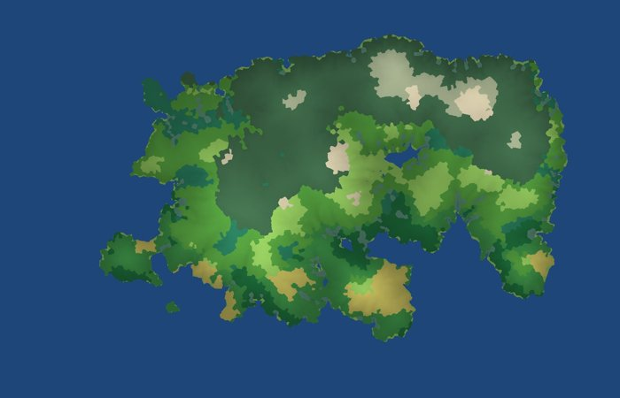
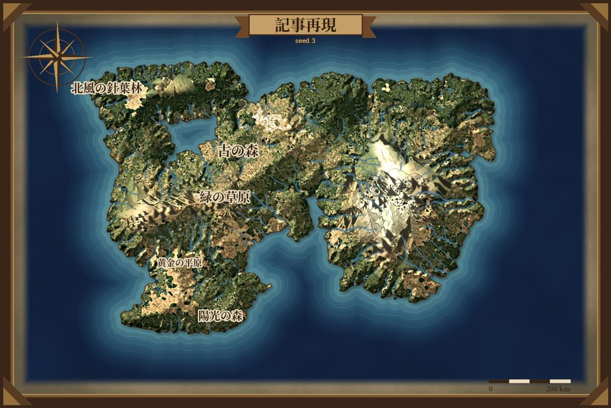

概要: 世界地図・地形の作り方を書いた記事を読み、その考え方を自分のプログラム(mk_article.py)で作り直しました。コードは写さず、考え方だけを参考にしています。作った世界を、今までの絵の処理(山の部品方式)にそのまま通して、地図の絵まで仕上げました。1つの世界の生成は約6秒です。
| 記事 | 地図・地形の作り方(やさしく) | 取り入れたか |
|---|---|---|
| mewo2「Generating fantasy maps」 | ①点をばらまいて1回だけ整える(約16,000点) ②円すい(島・山)・丘・傾きを足して高さを作る ③「陸の割合」で海面を決める ④水の通り道を調べて窪地を埋め、水の量(流量)を数える ⑤傾き×流量の平方根で地面を削る(強すぎると不自然なので上限をつける) ⑥海岸の細かい島をならす ⑦流量が多い所に都市を置き、都市から移動コスト(上り坂は高い・川や海は高い)で領域を広げて国境にする | ①〜⑦すべて取り入れた(自前コード) |
| Red Blob「polygon map generation」 | 端は必ず海にする。水(海・湖・川)からの距離で湿度を決め、気温と降水量の組み合わせで植生(生物群系)を決める。多角形の直線は後でノイズで揺らす | 湿度=水域からの距離、植生の表を取り入れた。端を海にする。ノイズの揺らしは未実装 |
| pvigier「Vagabond」 | 世界全体を一度に作り、川・都市・道を後から足せる作りにする。気温は北が寒い縦の傾きにノイズでゆがみをつける。降水は穏やかなノイズ。植生は気温と降水の表で決める | 気温・降水・植生の決め方を取り入れた。点は1,024個でなく16,384個 |
| イリノイ大 水力侵食の解説 | 雨→流れる→土を運ぶ・削る・積もらせる→蒸発、の繰り返し。格子法と粒子法がある | 考え方は参考にしたが、今回の削りはmewo2方式(傾き×流量)。粒子法は未実装 |
| Red Blob mapgen4 | 風・蒸発・降雨のシミュレーションで川と植生を決める。山と木は横から見た絵、川と海岸は上から見た線で描く(斜め投影)。手描きで地形の骨組みを指定できる | 本文に数値はなく未実装。「山は横から見た絵」は、今までの山の部品方式と同じ考え方 |
| Azgaar地図をUnityのゲームにする記事 | 地図を1回だけ書き出して、都市→領主領、地域→州にし、王国は毎回ランダムに領域を広げて作る。標高画像は侵食で谷や尾根を足す予定 | 地図データ+シミュレーション用の元データ、という分け方は今のデータ形式と同じ。王国の毎回生成は未実装 |
「異世界ファンタジーアプリの世界地図をどう作ったか」を書いた記事は見つかりませんでした。日本のインディーゲーム『ファンタジーマップシミュレーター』の紹介記事は、地図は自動生成か編集とだけ書かれ、作り方の説明がありませんでした。そのため近い内容の海外の開発記事と解説を読みました。




| 工程 | 秒 |
|---|---|
| 世界の生成(mk_article.py) | 約6 |
| 絵の処理(地表+山の部品+仕上げ) | 約7〜9 |
メモリは絵の処理で最大約600MB。生成側のメモリは未測定。
次: 風と山の陰(降雨の偏り)を足す、または国境・都市を絵に出す。
前: 部品から山を作る